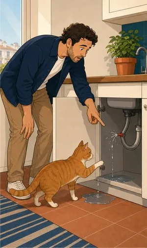
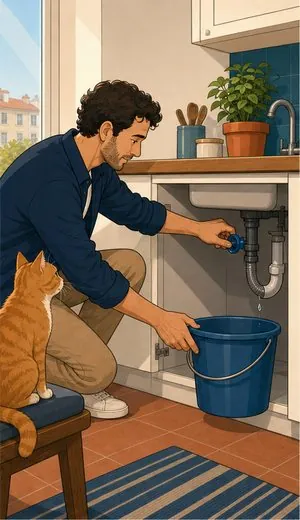
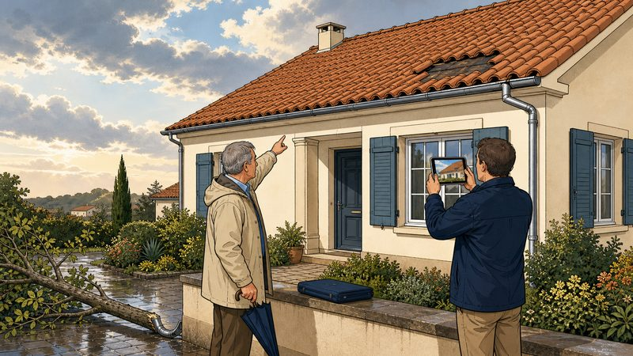

Seguro de habitação
A casa é o bem mais valioso da maioria das famílias. E o seguro que a protege é o que menos gente leu até ao fim.
O que pode incluir
Duas coisas diferentes
debaixo do mesmo telhado.
Um multirriscos cobre duas coisas distintas: o edifício — paredes, telhado, canalizações, tudo o que fica se virar a casa ao contrário — e o recheio: mobília, eletrodomésticos, roupa, computadores. Com crédito à habitação, o banco exige o primeiro. O segundo é escolha sua — e é o que costuma faltar.
Incêndio, raio e explosão
A base de qualquer multirriscos e a cobertura que o banco exige no crédito à habitação.
Danos por água
Roturas de canalização e os estragos que causam, nos eventos garantidos pela apólice. É a participação mais frequente que vemos ao balcão — e aquela onde as exclusões contam mais.
Fenómenos da natureza
Tempestades, cheias, granizo e queda de neve. Em zona ribeirinha como a nossa, não é detalhe.
Fenómenos sísmicos
Cobertura habitualmente facultativa em Portugal — e é justamente por isso que tanta gente não a tem sem saber.
Responsabilidade civil
Se uma rotura sua inundar o vizinho de baixo, é esta cobertura que responde.
Furto ou roubo do recheio
Com ou sem arrombamento, consoante a apólice. Confirme os sublimites para objetos de valor.
Quebra de vidros e espelhos
Vidraças, espelhos fixos, tampos de fogão e placas de indução. Barato de acrescentar, usado mais vezes do que se imagina.
Assistência ao lar
Canalizador, eletricista, serralheiro. A cobertura que mais se usa e de que menos gente se lembra que tem.



Sem letra pequena
Onde a cobertura
acaba.
Uma leitura geral, para chegar à conversa com ideias claras. Cada apólice tem as suas condições — e lemo-las consigo.
Ver o que está e o que não está coberto lista indicativa
Normalmente coberto
- Incêndio, raio, explosão e queda de aeronaves.
- Roturas e danos por água na rede interna da habitação.
- Tempestades, cheias e inundações, quando a cobertura está contratada.
- Responsabilidade civil por danos a vizinhos ou a terceiros.
- Furto ou roubo do recheio, dentro dos capitais e condições da apólice.
- Realojamento temporário se a casa ficar inabitável, em muitas apólices.
Normalmente excluído
- Falta de manutenção e desgaste — telhados velhos, infiltrações antigas já conhecidas.
- Obras sem licenciamento ou alterações estruturais não comunicadas.
- Fenómenos sísmicos, se a cobertura facultativa não tiver sido contratada.
- Dinheiro, jóias e obras de arte acima dos sublimites, salvo declaração expressa.
- Casas desabitadas por longos períodos não comunicados à seguradora.
- Danos estéticos sem prejuízo funcional, na generalidade das apólices.
Para quem
Comprou casa com crédito
O banco exige vida e multirriscos, mas não é obrigado a contratá-los no banco. Comparamos, e se compensar tratamos da comunicação à instituição.
Vive em casa arrendada
O senhorio segura o edifício; o recheio é consigo. Um multirriscos de inquilino é barato e cobre também a responsabilidade civil se estragar algo do senhorio ou dos vizinhos.
Tem casa para arrendar
O risco muda: precisa de responsabilidade civil de proprietário e, idealmente, cobertura para os períodos em que a casa fica vazia entre inquilinos.
Informação resumida e de caráter geral. As condições que valem são as da informação pré-contratual e contratual do produto proposto.
Quem define coberturas, capitais e exclusões é a companhia. Veja a página oficial do produto e traga-nos as dúvidas.
Perguntas frequentes
O que nos
perguntam ao balcão.
Sou obrigado a fazer o seguro no banco onde tenho o crédito?
Não. Pode exigir que exista seguro com certas coberturas, mas não pode impor a seguradora dele nem agravar o crédito por escolher outra com coberturas equivalentes.
Comparamos as propostas e, se compensar mudar, tratamos da comunicação ao banco.
O meu seguro cobre sismos?
Só se a cobertura de fenómenos sísmicos tiver sido expressamente contratada. Em Portugal é, em regra, facultativa, e muita gente não a tem sem saber.
Numa zona como a península de Setúbal, é das primeiras coisas que verificamos numa apólice que nos trazem.
E se eu segurar a casa por menos do que vale?
Chama-se infrasseguro. A seguradora pode aplicar a regra proporcional: se a casa está segura por metade do que deveria, recebe metade do prejuízo — mesmo num sinistro pequeno.
É por isso que insistimos em rever o capital de tempos a tempos, sobretudo depois de obras.
Tenho de declarar as obras que fiz?
Sim, sempre que alterem o valor ou o risco: ampliações, telhado novo, painéis solares, piscina. Não declarar pode levar à redução da indemnização.
Sou inquilino. Preciso mesmo de seguro?
O edifício é do senhorio, mas o recheio é seu e a apólice dele não o cobre. E se causar danos ao vizinho, quem responde é o inquilino. Um multirriscos de inquilino custa pouco e resolve os dois casos.
A sua casa está segura
pelo valor certo?
Traga a apólice, ou ligue-nos com ela à mão. Vemos capitais, coberturas em falta e o que paga sem usar.
Sem compromisso. Não usamos os seus dados para mais nada.